Producción de Octubre
Producción de la empresa Narve durante octubre de 2026.
Mis actividades
-
7Octubre
Mise en place de las empanadas
- Limpieza y desinfección de mesas, utensilios y equipos de trabajo.
- Pesaje de los ingredientes de la masa y del relleno según la receta estándar.
- Preparación de la masa, reposo y porcionado.
- Preparación del relleno, enfriamiento y almacenamiento en refrigeración.
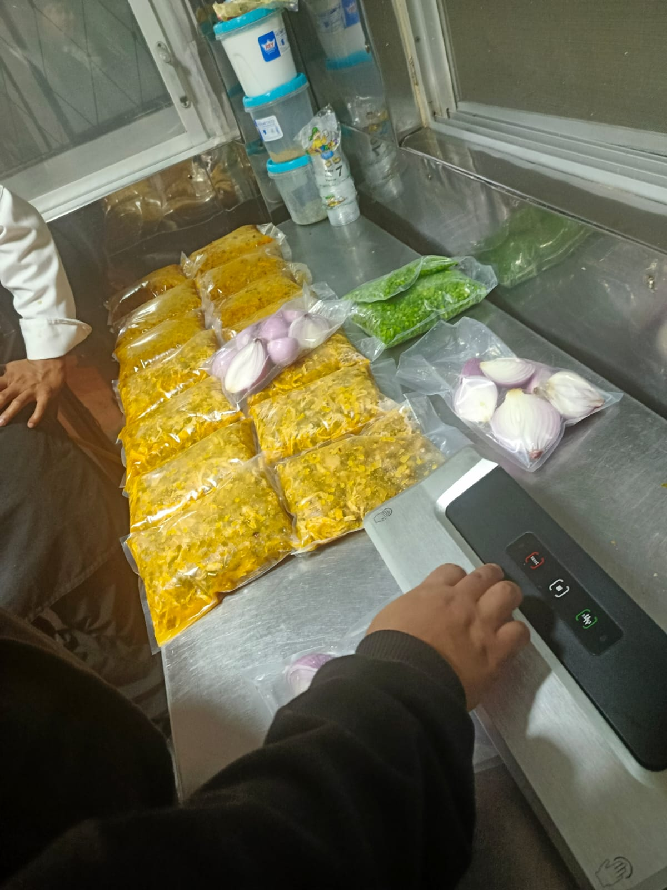
Envasado del relleno de las empanadas. -
9Octubre
Armado, horneado y empaquetado de empanadas
- Estirado de la masa y corte de los discos.
- Colocación del relleno, cerrado y repulgado de cada empanada.
- Distribución en latas y horneado hasta lograr un dorado uniforme.
- Enfriamiento sobre rejillas antes de manipularlas.
- Empaquetado en fundas transparentes y almacenamiento.
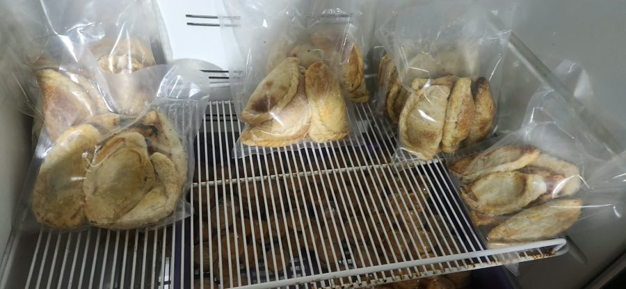
Empanadas horneadas en enfriamiento sobre rejillas. 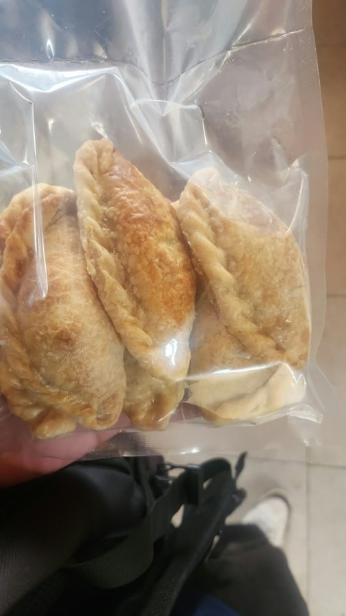
Empanadas empaquetadas en funda transparente. 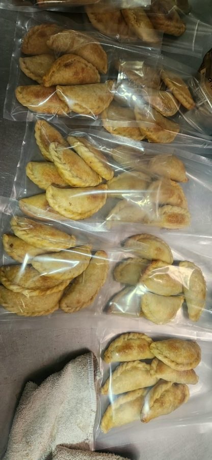
Lote de empanadas empaquetadas listas para su entrega. -
16Octubre
Elaboración de la colada morada
- Recepción del mise en place del día 14 de octubre.
- Limpieza y desinfección del área, ollas y utensilios.
- Calentamiento de la infusión de hierbas, especias y mortiño preparada en el mise en place.
- Disolución de la harina morada en líquido frío e incorporación a la olla, removiendo constantemente para evitar grumos.
- Cocción a fuego medio hasta espesar y ajuste de dulzor.
- Incorporación de las frutas picadas al final de la cocción.
- Envasado en vasos con tapa, distribuidos en la mesa de trabajo.
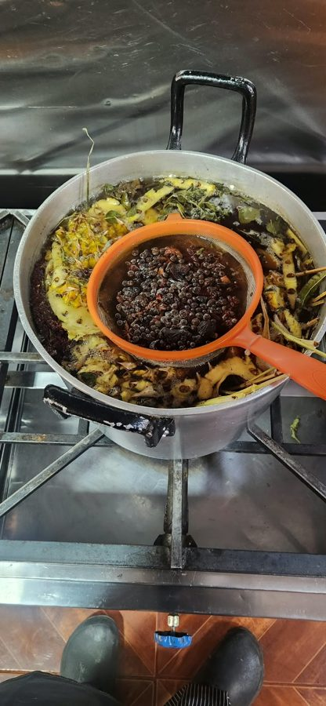
Cocción de hierbas aromáticas con mortiño para la base de la colada. 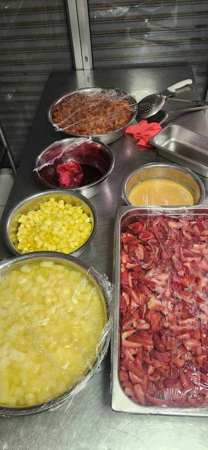
Frutas picadas y separadas en recipientes. 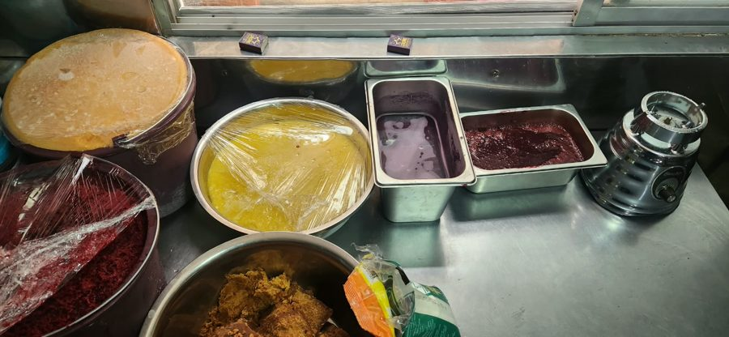
Insumos preparados y cubiertos, listos para refrigeración. 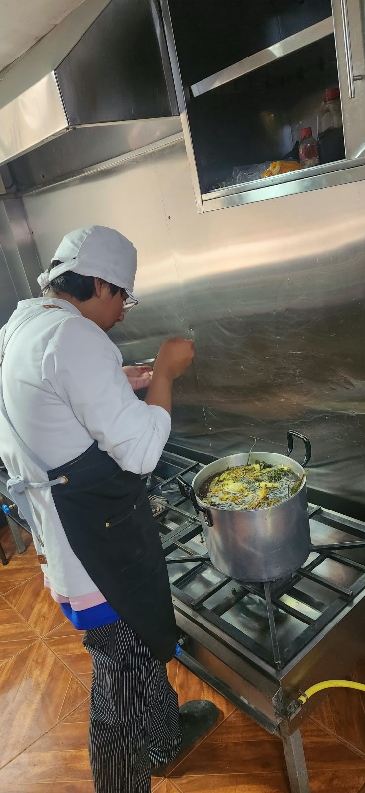
Elaboración de la colada morada. 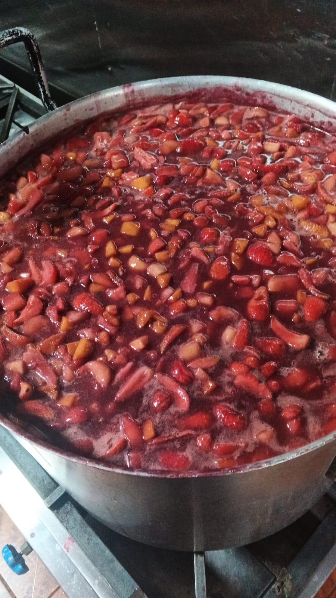
Colada morada con las frutas incorporadas. 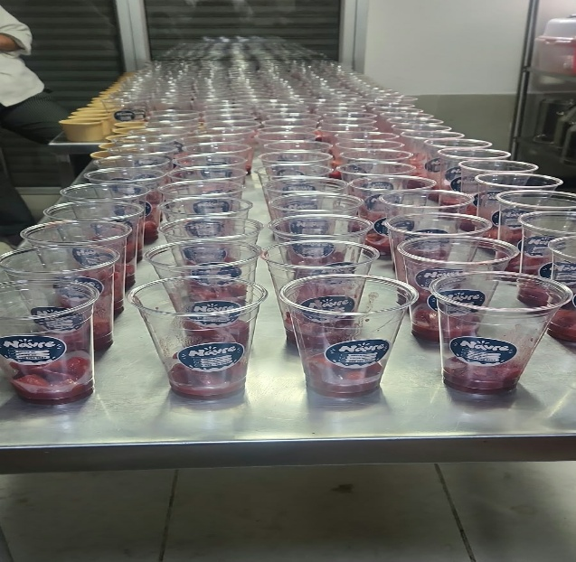
Vasos distribuidos en la mesa de trabajo. -
17Octubre
Elaboración de guaguas de pan
Participé en la elaboración de las guaguas de pan, un producto tradicional de la temporada de Finados, desde la preparación de la masa hasta el horneado.
- Pesaje de ingredientes y preparación de la masa.
- Amasado, reposo y porcionado.
- Formado de las guaguas, decorado y fermentado.
- Horneado y enfriamiento antes de su empaque.
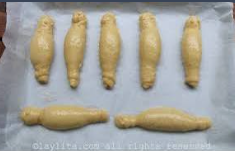
Guaguas de pan formadas. Imagen de referencia: laylita.com. -
27Octubre
Estandarización de los nachos con carne
El martes 27 de octubre elaboré una unidad de nachos con carne para estandarizar las cantidades y evitar desperdicios.
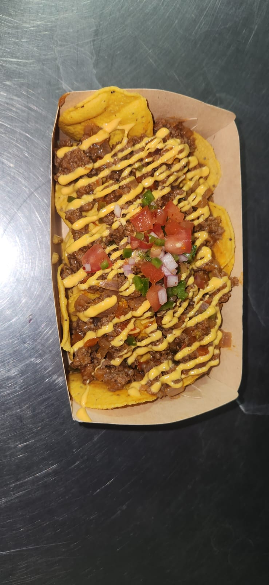
Unidad de nachos con carne. -
29Octubre
Elaboración de helado sabor a colada morada
Elaboré helado sabor a colada morada el jueves 29 de octubre para el evento Finados Fest del viernes 30. Trabajé la mezcla con batidor hasta lograr una textura homogénea y cremosa, y la llevé a congelación para tenerla lista a tiempo.
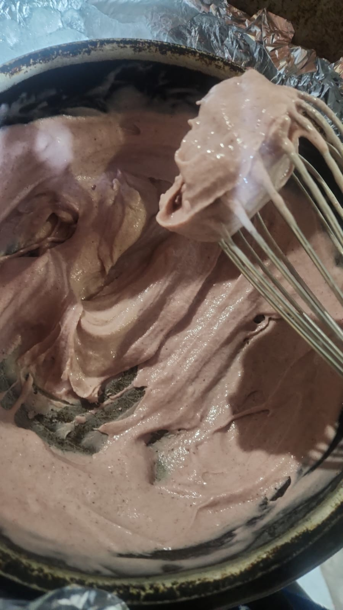
Preparación del helado sabor a colada morada. -
30Octubre
Armado de las lasañas
Junto con el equipo, armé las lasañas en bandejas de aluminio individuales, alternando las capas de pasta, salsa y queso, y cuidando que todas quedaran uniformes y listas para su entrega.
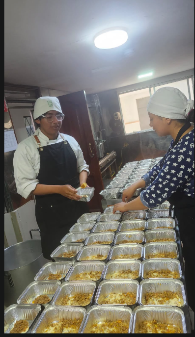
Armado de las lasañas. -
31Octubre
Elaboración de cheesecake
Producción destinada al evento del Boulevard del 1 y 2 de noviembre.
- Limpieza y desinfección del área de trabajo y de los envases individuales.
- Triturado de la galleta y mezcla con mantequilla derretida para formar la base.
- Distribución y compactado de la base en cada envase.
- Preparación de la crema de queso y llenado de los envases.
- Refrigeración hasta que el relleno tome consistencia.
- Colocación de la cobertura de frutos rojos.
- Tapado de los envases y almacenamiento en refrigeración hasta su entrega.
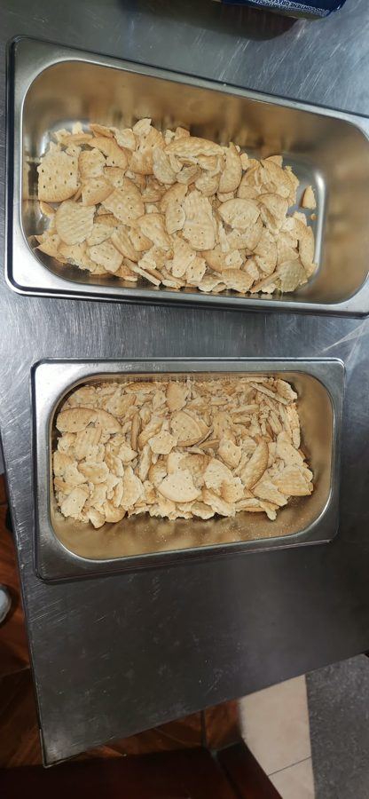
Galleta lista para triturar. 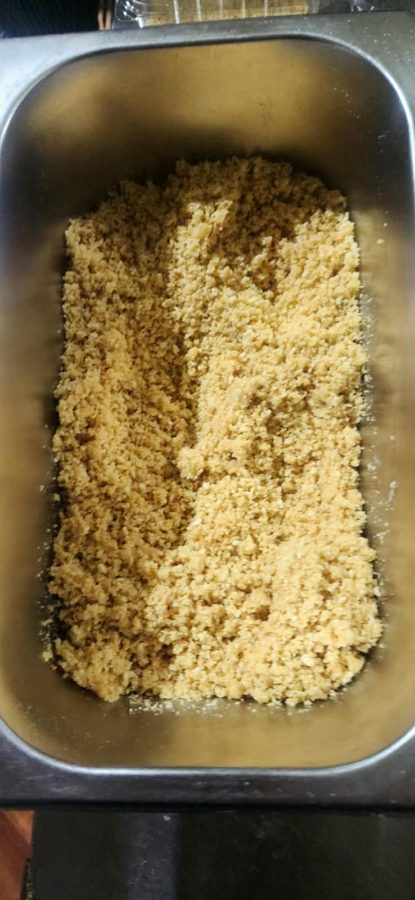
Galleta triturada y mezclada para la base. 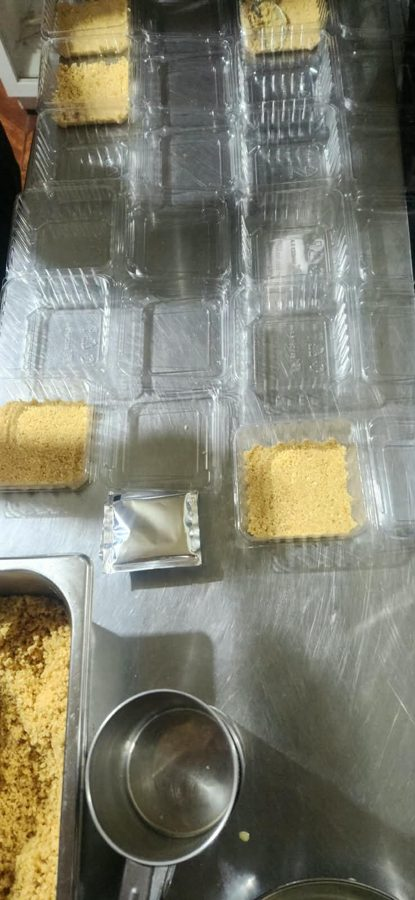
Colocación de la base en los envases individuales. 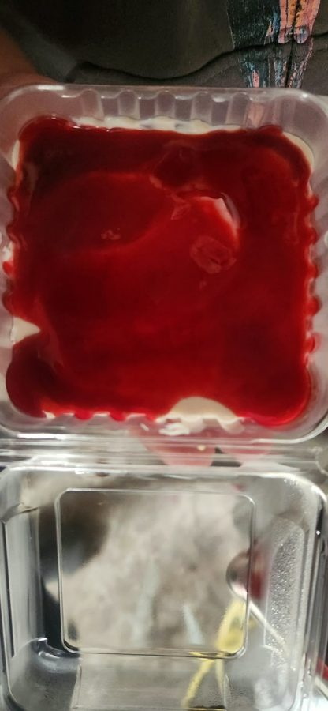
Cheesecake con cobertura de frutos rojos. 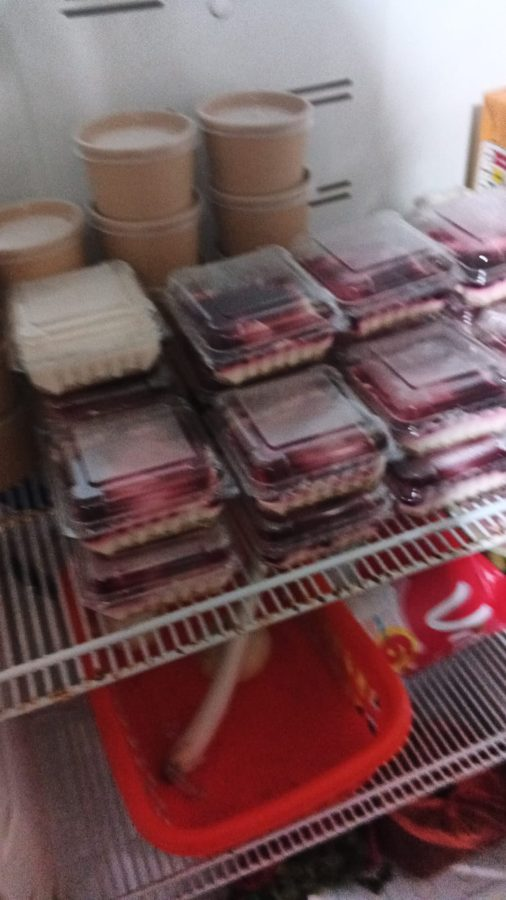
Cheesecakes terminados en refrigeración. -
31Octubre
Elaboración de cupcakes, cake pops y preparación del agua de Jamaica
Preparé las masas y horneé los cupcakes y la base de los cake pops, a los que después di forma y coloqué en sus palitos. También preparé el agua de Jamaica que acompañó a los nachos.
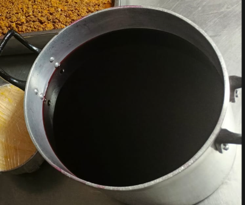
Elaboración de agua de Jamaica para los nachos. 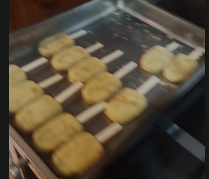
Elaboración de cake pops. -
31Octubre
Venta de nachos de queso y carne en el Farras ESPOCH
Me tocó la venta de nachos de queso y carne en la segunda noche del Farras ESPOCH. Ayudé a organizar el puesto, atendí a los clientes y entregué los productos durante la jornada.
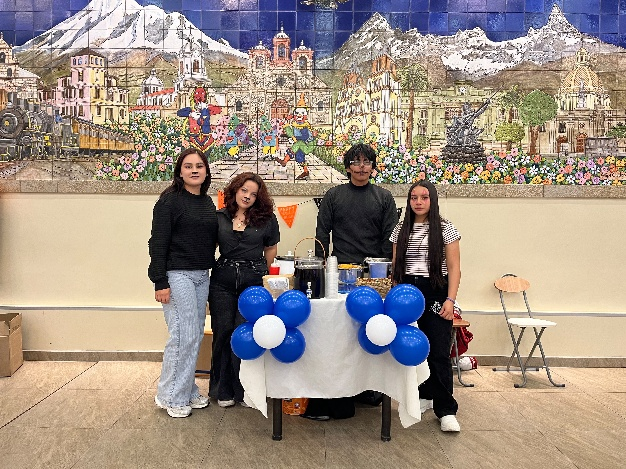
Venta en la segunda noche del Farras ESPOCH. Nachos de queso y carne.